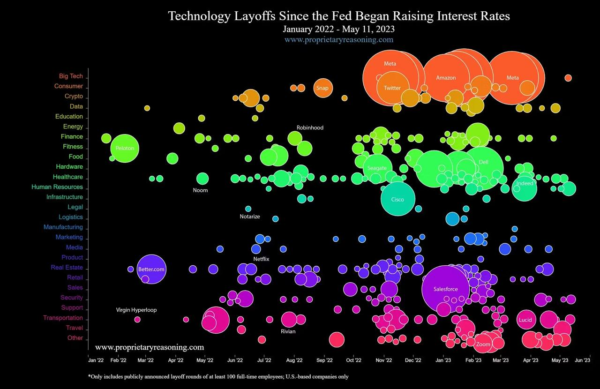

Data Visualization: Critique and Redesign
1 Executive Summary
This report provides a critical analysis and redesign of a 4-dimensional bubble chart depicting “Technical Layoffs Since the Fed Began Raising Interest Rates.” While the original visualization attempts to display chronological dates, industry sectors, layoff volume, and sector groupings simultaneously, this multi-dimensional approach results in severe cognitive overload and data occlusion. Our redesign simplifies the visual encodings to reveal the underlying trends with greater accuracy.
2 Introduction & Original Visualization

2.1 Context
The original visualization aims to communicate the timing and scale of tech layoffs following U.S. interest rate hikes. The visualisation tells the industry-wide impact to the Federal Reserve’s interest rate hikes, showing how different sectors downsized as borrowing costs rose. It attempts to plot four distinct dimensions of data into a single 2D space using the following visual encodings:
1. Date: Mapped to the horizontal X-axis (chronological timeline).
2. Industry Sector: Mapped to the vertical Y-axis (categorical).
3. Scale of Layoffs: Mapped to the size (area) of the data points.
4. Sector Grouping: Mapped to the color of the bubbles.
2.2 Critique of the Original Design
2.2.1 Strengths
- Comprehensive Data Representation: The visualisation provides a comprehensive, chronological view of layoffs across multiple sectors, allowing for a broad understanding of the impact of interest rate hikes.
- Use of Size: Different bubble sizes effectively indicate the scale of layoffs, giving a quick visual cue about the magnitude of job losses in each sector.
2.2.2 Weaknesses
Packing four variables into a single chart violates several core data visualization principles:
- Severe Overplotting and Occlusion: Massive bubbles representing companies physically cover up dozens of smaller layoff events in the same time period.
- The “Area” Perception Problem: Human visual perception is poor at comparing 2D areas, making it difficult to differentiate the scale of layoffs between overlapping bubbles.
- High Cognitive Load: The viewer’s brain must simultaneously track the timeline, find the specific industry on the Y-axis, estimate the bubble area, and match color to a legend.
- Misleading Density: The volume of overlapping circles in sections like “Big Tech” and “Retail” obscures the individual data points and specific dates.
3 Methodology & Improvement Strategy
3.1 Planned Improvements
To resolve the occlusion and cognitive load issues, our primary strategy is to break the overloaded 4D chart into smaller components using a Small Multiples design strategy. This involves creating a grid of individual, aligned scatter plots categorised by major sector groupings.
3.2 Data Source
- Primary Source: https://www.kaggle.com/datasets/theakhilb/layoffs-data-2022
Data will be extracted from the Kaggle dataset, which contains detailed records of layoffs across various industries, including dates, company names, and layoff counts. Unlike the original visualisation which focused only on U.S. based companies, this dataset provides a global perspective, documenting layoff events internationally.
3.3 Data Preparation
The initial step involves extracting the original variables (Date, Industry Sector, Layoff Count, and Company) and filtering the dataset for missing values to ensure data quality.
3.4 Visualization Strategy & Final Design Choices
- Chart Type: Transitioned from a single, crowded bubble chart to small multiple scatter plots for each sector.
- Visual Encodings: The X and Y axes remain consistent across all plots. Bubble size is retained for layoff volume, but with clutter removed, scaling is easier to interpret.
- Clarity: Gridlines are softened and the color palette is standardized to ensure final result is aesthetically pleasing and professional.
4 Final Redesigned Visualization
#| label: fig-redesign #| fig-cap: “Data Visualization: Wealth vs. Happiness by Continent”
import pandas as pd import matplotlib.pyplot as plt import seaborn as sns